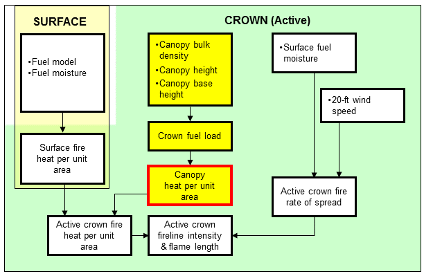
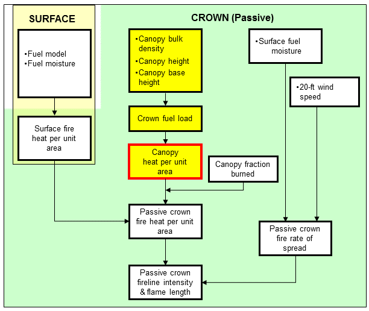

|
Canopy Heat per Unit Area |
Canopy heat per unit area (HPUA) is estimated from crown fuel load as described by Rothermel (1991).
For active crown fire, canopy HPUA is added to the surface fire heat per unit area to calculate active crown fire heat per unit area, which is in turn used to calculate active crown fireline intensity. This applies whether the Rothermel (1991) or Scott and Reinhardt (2001) method of calculating crown fire is used.
For passive crown fire, canopy heat per unit area is multiplied by the crown fraction burned before being added to surface fire heat per unit area to calculate passive crown fire heat per unit area, which is in turn used to calculate passive crown fireline intensity. This only applies if the Scott and Reinhardt (2001) method of calculating crown fire is used.
| I/O | Module | If | Notes |
| Input | None | ||
| Output | CROWN | Intermediate value |
|  |
|  |